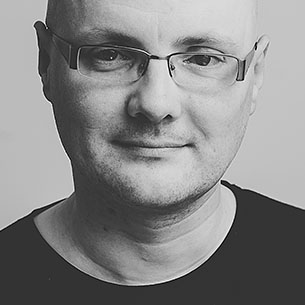

Looking for top-notch Ruby and JavaScript programmers?
Choose world-class developers with impressive open-source record. Choose
direct communication over managemental overhead. Choose paying for actual
work done.
Cut off all the fat. Choose Rebased.
The Team
Imanel
Bernard Potocki
Open-source contributor since high school (C++ times). Ruby and JS developer since 2008, he still maintains a massive open-source portfolio.
Tomash
Tomasz Stachewicz
Ruby developer since 2005, went pro in 2007. Likes less-popular languages, especially D. Founder of Warsaw Ruby Users Group.
Chastell
Piotr Szotkowski
Professional Ruby developer for fun, assistant professor at Warsaw University of Technology by passion – or the other way around. Awesome at both.
Czak
Łukasz Adamczak
Ruby developer with many years of experience under his belt, portfolio that includes some iOS applications and exceptional sense of usability.
Detomastah
Łukasz Pełszyński
Ruby developer since 2007, open-source enthusiast since high-school. His Github account includes not only Ruby projects, but also C, C++ and Haskell ones.
Zły
Krzysztof Białek
Psychologist who prefers working with code over other people minds. Besides Ruby he specializes in Android apps and responsive CSS.
Chrmod
Krzysztof Modras
A professional Ruby developer since 2006 (back when Rails was at version 1.1), recent Javascript enthusiast and Ember.js contributor.
Sarniak
Łukasz Sarnacki
Ruby and Javascript professional, Łukasz likes unusual databases (Neo4j, Postgis) and contributes to Rails, Travis-CI and other OS projects.
Meal
Mateusz Kozak
Ruby developer since 2008, Mateusz combines programming profficiency with his deep passion for hardware. Maker.
Tuhaj
Piotr Zientara
A philosopher who found deep beauty in programming, Piotr is quickly becoming an expert in Ember.js (and assorted tools).
Turbo
Katarzyna Turbiasz-Bugała
Rails Girls alumnae, Katarzyna uses her years of experience as a researcher to quickly become a great Ruby developer.
Paweł
Paweł Nguyen
Started using Ruby while studying Computer Science, went pro in 2010. Likes automating every mundane task he stumbles upon.
Kala
Kamila Wyroślak
"Programmers and programming projects are easy to take care of when you have experience with freight ships being on fire in the middle of an ocean."
Hodor
Hodor The Cat
Ever saw a cat contributing to open-source projects? Now you have!

Smoła
Marek Smolski
Always describing his plans with an evil laughter at the end, Marek is managing our happy bunch.
Projects
Large e-commerce site integrated with external ERP system.
Enterprise SEO Analytics provider, processing gigabytes of data every day.
High-profile conference: public site and backoffice app integrated with CRM and ticketing systems.
Construction site management with issue tracking and notification, integrated with blueprints.
Loyalty program backend for gas stations network.
Company resource analytics for internal (HR) and external (sales) use.
Open Source
Ruby on Rails
The framework that doesn't need introduction, used by us in most of the projects.
Travis CI
Continuous integration loved by open-source community. That includes us!
Ember.js
"A framework for ambitious web applications" is our framework of choice when it comes to rich-client apps.
Active Admin
Currently our favourite tool for quickly creating administration backends in Rails applications.
Ruby-Websocket
Maintained by Imanel, it's probably the best Ruby gem for handling websocket connections, downloaded over 4M times.
Spree
The e-commerce Rails engine we all love to work with (and contribute to).
Community
WRUG
Warsaw Ruby Users Group was founded in 2008 by our own Tomash and Mike Lee and remains one of the largest regular Ruby developers meetup with 40-60 developers attending each meetup.
Rails Girls
Sponsored and supported by Rebased since the first edition of Rails Girls Warsaw, we are commited to sustaining and growing this great initiative, not only in Warsaw edition. Besides sponsoring and coaching, Chastell and Tomash wrote the new Rails Girls programme and became coaches of Rails Girls Summer of Code teams that work in Warsaw.
Trainings
Rebased history dates back to free Ruby on Rails workshops that Tomash pioneered since 2008 at Warsaw University of Technology where they met with Imanel. Being practitioners with everyday use of taught technologies and strong theoretical background, we teach and train programmers in the most effective way that allows them to proceed further with expanding their skills while possessing deep understanding of used tools (languages, libraries, frameworks).
Now We Can Work With You
Company info:
Rebased sp. z o.o.
ul. Jana Kasprowicza 30
01-871 Warszawa
Poland
VAT-ID: PL1182071005
Headquarter:
ul. Edwarda Jelinka 48
01-646 Warszawa
Poland